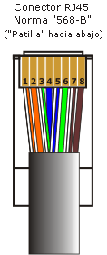

Normativa para Hacer Cables de Red (Clase A y B)
Las normas para hacer cables de red se basan en los estándares TIA/EIA-568, que definen dos esquemas principales: T568A y T568B.
Norma T568A (Clase A)

Secuencia de colores:
- Blanco/Verde
- Verde
- Blanco/Naranja
- Azul
- Blanco/Azul
- Naranja
- Blanco/Marrón
- Marrón
Norma T568B (Clase B)
Secuencia de colores:
- Blanco/Naranja
- Naranja
- Blanco/Verde
- Azul
- Blanco/Azul
- Verde
- Blanco/Marrón
- Marrón
La diferencia principal entre ambas normas es el intercambio de las posiciones de los pares verde y naranja.